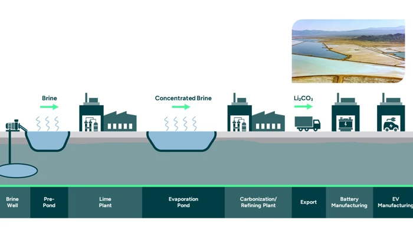
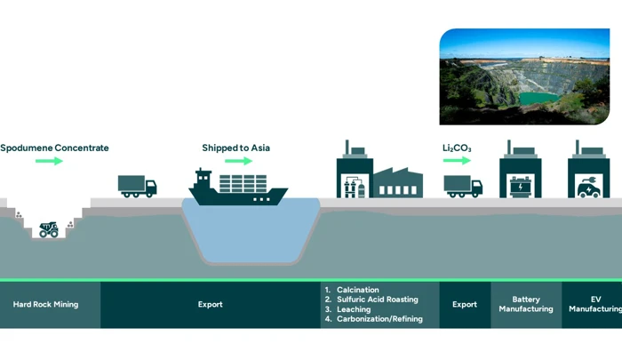
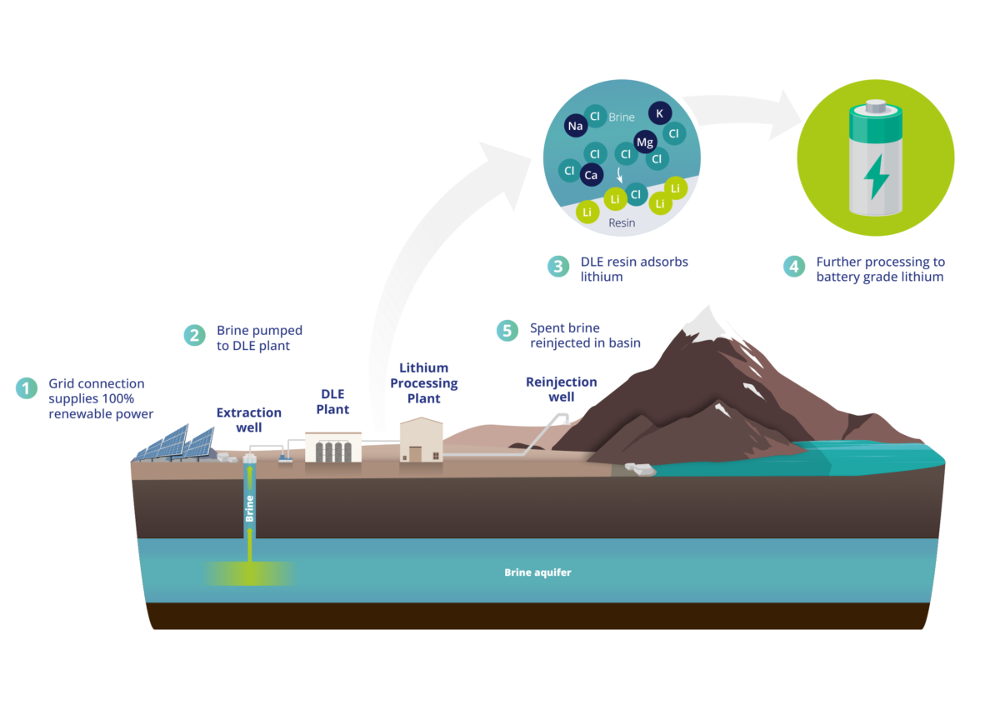
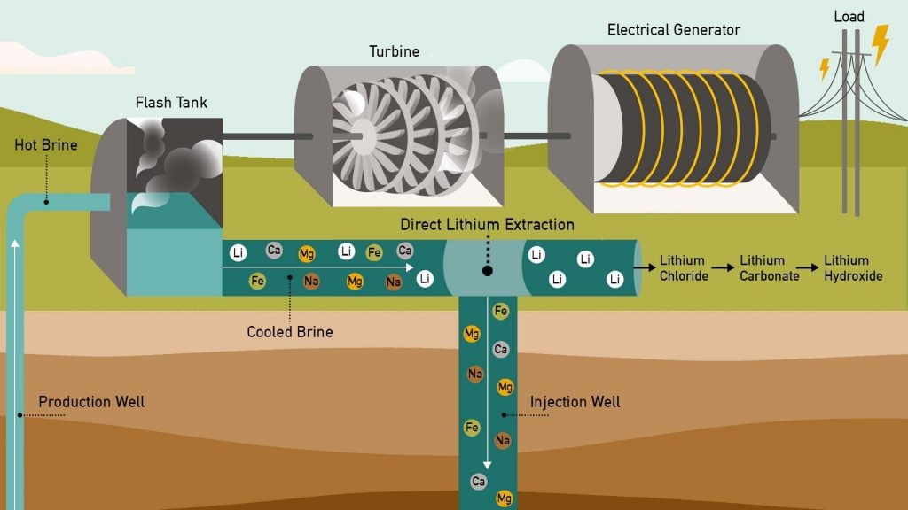
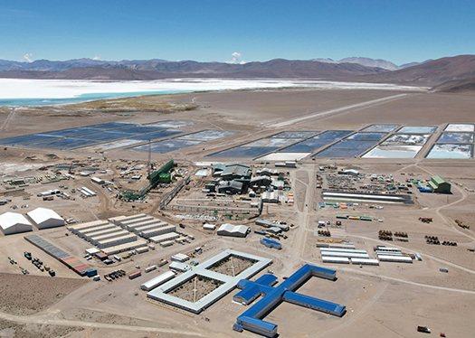

As the demand for lithium-ion batteries surges, driven by the rise of electric vehicles (EVs) and renewable energy storage, various methods of lithium extraction are under scrutiny. This newsletter explores the traditional and emerging techniques for lithium mining, highlighting their environmental impacts and efficiencies.
Traditional Lithium Extraction Methods
1. Solar Evaporation Brine Processing: This method involves pumping lithium-rich brine from underground reservoirs into large evaporation ponds. The brine is left to evaporate under the sun, a process that can take up to 18 months. While it is a widely used method, particularly in regions like the Lithium Triangle (Bolivia, Argentina, and Chile), it has significant drawbacks:
- Water Consumption: The process consumes vast amounts of water, exacerbating water scarcity issues in arid regions.
- Low Recovery Rates: Typically, only about 50% of the lithium content is recovered from the brine.
- Environmental Concerns: The disposal of waste salts and chemical reagents poses challenges to local ecosystems.

2. Hard Rock Mining: Hard rock mining targets lithium-bearing minerals like spodumene. This method includes several steps:
- Extraction: Spodumene is mined either through open-pit or underground methods.
- Processing: The ore undergoes crushing, grinding, and flotation to concentrate lithium.
- Conversion: The concentrated spodumene is roasted to convert it into a more valuable form before being treated with sulfuric acid to produce lithium sulfate.
While spodumene mining yields high lithium concentrations (often exceeding 3% lithium oxide), it is energy-intensive and can lead to significant land disturbance.

3. Clay Extraction Methods: Clay deposits are becoming a focus of research due to their potential for more accessible extraction and high lithium yield. New methods are being developed to extract lithium from clay deposits using less water and lower temperatures, promising a more sustainable approach.
The United States has significant clay lithium deposits, especially in Nevada.
Comparison of Mining Techniques
- Cost Efficiency: Hard rock mining tends to be more expensive but yields high-purity lithium, while brine extraction is cheaper but slower.
- Environmental Impact: Brine extraction often has a lower carbon footprint but impacts local water resources, whereas hard rock mining has a more immediate ecological impact.
- Yield and Productivity: Hard rock offers a higher yield per ton, but brine methods are generally more sustainable and scalable.
Emerging Technologies in Lithium Extraction
1. Direct Lithium Extraction (DLE) DLE represents a revolutionary shift in lithium extraction techniques. This method utilizes innovative technologies such as adsorption, ion exchange, and membrane processes to extract lithium directly from brine sources with enhanced efficiency:
- Higher Recovery Rates: DLE can achieve recovery rates exceeding 90%, significantly better than traditional methods.
- Reduced Environmental Impact: DLE minimizes water usage and land disruption by using less land-intensive processes.
- Sustainability Focus: Some DLE technologies even utilize industrial by-products as feedstock, promoting a circular economy.

2. Geothermal Brine Extraction This method taps into geothermal resources to extract lithium from hot brines found underground. It offers several advantages:
- Lower Carbon Footprint: The natural heat from geothermal sources can reduce energy requirements for extraction.
- Sustainable Supply Chain: Integrating with existing geothermal plants can provide a continuous supply of lithium while generating renewable energy.

Lithium Mining in Different Regions
Overview of Lithium Mining in South America
South America, particularly the Lithium Triangle, holds vast brine deposits and is a leading supplier of lithium for the global market.
Asia’s Role in Lithium Production
China, a major producer and refiner of lithium, is also the largest consumer, driven by its booming EV industry.
Lithium Mining in North America and Europe
North America, especially the United States, is investing in lithium mining to reduce dependence on foreign sources. Europe is also exploring new lithium projects to support its EV market.
Challenges in Lithium Mining
Lithium mining faces several challenges, including fluctuating lithium prices, opposition from environmental groups, and the technological limitations of current extraction techniques. These challenges impact profitability and sustainability.

Global Demand and Future Projections
The demand for lithium is expected to skyrocket as more countries transition to EVs and renewable energy. Analysts predict that lithium production will need to double by 2030 to meet global demand.
Conclusion
The landscape of lithium extraction is evolving rapidly as the world shifts towards sustainable energy solutions. While traditional methods like solar evaporation and hard rock mining have been foundational in meeting current demands, emerging technologies such as DLE and geothermal extraction present promising alternatives that could revolutionize the industry. As we navigate this transition, balancing efficiency with environmental responsibility will be crucial in ensuring a sustainable future for battery production.